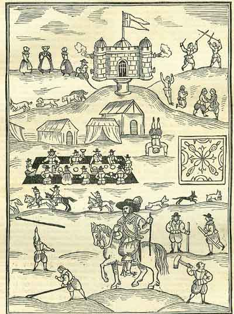

Tuesday, May the 31th, 2005
back to: title, date or indexes
Dobson rarely showed any interest in sport. He did once begin an essay called Why We Say ‘Sport’ & ‘Maths' While Americans Say ‘Sports' & ‘Math’, but wrote no more than four or five sentences before abandoning it. Marigold Chew gives a fascinating insight into the workings of Dobson's pulsating cranium when she describes what happened next:
“In spite of the fact that he had fed his scribblings into the fire, the mere act of writing the words sport and sports two or three times sent Dobson whirling off on a new track. It was a morning of torrential rain, as usual, but Dobson donned a mackintosh and stomped out of the house. He was gone for hours. When he returned, sopping wet, he announced that he intended to write an Encyclopaedia of Sport based on an entirely novel classification. Instead of categorising sports into team and solo games, those using balls and those eschewing them, those that require bats, racquets, sticks and pucks and those that don't, his work would instead approach the topic from what he called, immodestly, ‘a Dobsonian angle’.
“Swallowing a mouthful of toasted blob-cake, I asked him what he meant. He fixed me with those beady yet watery eyes and announced that he had, while walking along the lane that leads to the ruinous sump, devised six ‘bags' of sporting activity; spindly, apprehensive, dashing, clotted, baleful and monkey-like. There was no known human sport, he shouted, growing hot with excitement, his arms windmilling, which could not be levered into one of these categories, and his task would be to draw out the ur-characteristics of each pastime.
“I tipped my plate of cake-crumbs into the sink and asked the pamphleteer where, in this system, he would place the various activities at a mediaeval tourney, where lusty jocund swains would tilt at bagatelles and gambol with partridges et cetera et cetera?
“Dobson did not reply. Later that day, by a curious coincidence, he was attacked by a flock of partridges while waiting at the bus stop. Thereafter, at least for the next few months, all his attention was fixated upon birds, and the sport encyclopaedia was quietly forgotten.”
Devotees of Dobson will of course be aware that the bird-fixation period to which Marigold Chew refers resulted in some of the great man's best-loved pamphlets, including the matchless How I Was Attacked By A Flock Of Partridges At A Bus Stop While On My Way To The Potato Club (out of print).

A mediaeval tourney : note the lusty jocund swains a-gambolling
Hooting Yard on the Air, June the 1st, 2005 : “The Immense Duckpond Pamphlet” (starts around 12:55)